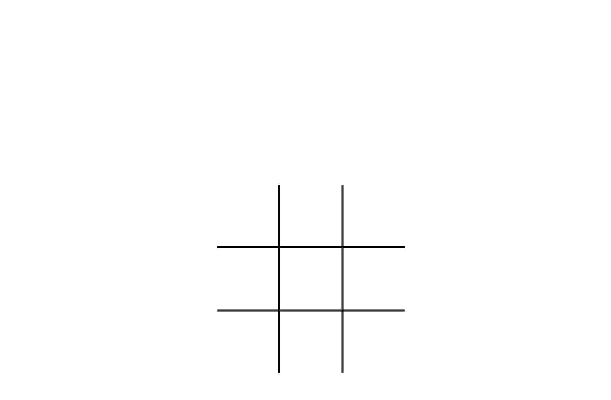

Welkom bij ThinkTap
Dit spel is gemaakt om de wondere wereld van het programmeren te ontdekken. Lees hier de tutorial en geniet daarna van onze game.
Wat is ThinkTap?
ThinkTap is een puzzelspel genaamd "X" en "O", die om de beurt de velden in een 3×3 raster markeren. De speler die erin is geslaagd drie respectieve merktekens in een horizontale, verticale of diagonale rij te plaatsen, wint het spel.
Hoe te spelen?
Gebruik je muis om een "X" of "O" te plaatsen in het raster door te klikken in het raster.
It's play time!
Wij wensen jou een epische tijd met ons spel!
ThinkTap Code Tutorial
Hieronder vind je de nodige uitleg en code die je nodig hebt om het spel te maken.
Stap 1
Installeer Visual Studio Code op uw computer of laptop via deze link. Verder moet u in Visual Studio Code een extensie installeren deze heet: live server met deze extensie kunt u een server opstarten en u restultaat zien van uw geschreven code. De link naar deze extensie en hoe deze te laten werken vindt u hier.
Stap 2
Als Visual Studio Code geïnstalleerd is maakt u op u coputer of latptop en nieuwe map aan en geeft u die een naam bv. "game", waar die map staat kiest u zelf daarna opent u Visual Studio Code.
Stap 3
Als Visual Studio Code open staat gaat u uw map daarin openen. Bekijk onderstaand filmpje.
Stap 4
Nu uw map geopent is in Visual Studio Code kunnen we gaan beginnen met programmeren en de eerste stap is een index.html bestand aanmaken. Bekijk onderstaand filmpje.
Stap 5
Nu we een index.html bestand hebben kunnen we bijna beginnen met programmeren eerst maken we nog een map aan waar onze css, JavaScript en afbeeldingen zullen komen als voorbeeld noem ik de map static. Bekijk in onderstaand filmpje.
In bovenstaand filmpje wordt getoond hoe u de map static aanmaakt en 2 submappen JavaScript afgekort js en een css map
Stap 6
Nu we een index.html bestand hebben kunnen we beginnen met programmeren. In openstaand index.html bestand kopieer en plak je volgende code:
Met de bovenstaande HTML code hebt u de basis voor de game. Hebt u geen idee hoe u dit aanpakt? Geen probleem bekijk dan onderstaand filmpje en volg de stappen.
Stap 7
Als u alle vorige stappen goed gevolgd hebt zou u volgend restultaat moeten bekomen.